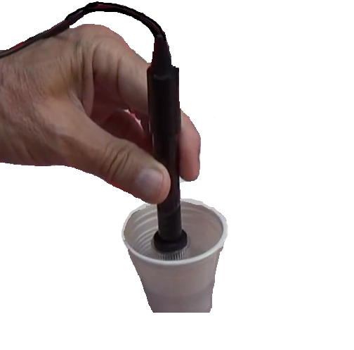
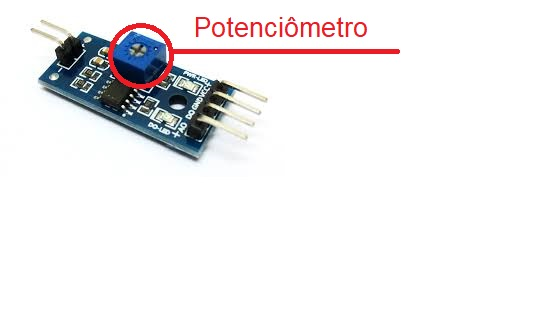
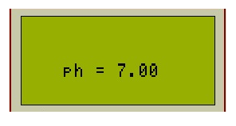

Como usar o FarmBud ?
"O FarmBud é um instrumento que foi pensado em seu design e funcionamento da forma mais simples possível para que o usuário não tenha problemas".
ㅤㅤㅤNo dispositivo haverá 4 (quatro) botões para a navegação entre telas: Seta para esquerda (<), Seta para direita (>), Voltar e Enter. Para navegar entre os fatores, basta clicar nas setas até o fator desejado, ao encontrar a tela do fator desejado aperte o botão "Enter" para visualizar os dados obtidos pelo dispositivo, com o botão apertado abrirá uma caixa com o sensor e ao terminar a visualização basta clicar no botão de "Voltar" para retornar ao menu e a caixa fechará automaticamente.

Ph do solo
ㅤㅤㅤAo clicar para visualizar o fator de pH do solo abrirá uma caixa do lado inferior esquerdo, no qual terá uma sonda, com a caixa aberta é só inserir a sonda no solo que deseja descobrir o seu nível de pH. Os dados apresentados na tela serão exibidos em uma escala entre 0 e 14, onde entre 0 e 6,9 significa solo com pH ácido, 7 pH do solo neutro, e 7,1 e 14 ph do solo básico. Para valores ideias consultar dentro do site na aba Vegetais.
Temperatura
ㅤㅤㅤAo clicar para visualizar o fator de temperatura abrirá uma caixa do lado direito do dispositivo, com a caixa aberta é só esperar o obtenção dos dados pelo sensor. Os dados serão apresentados em °C (Graus celsius). Para valores ideias consultar dentro do site na aba Vegetais.
Luminosidade
ㅤㅤㅤAo clicar para visualizar o fator de Luminosidade abrirá uma caixa do lado esquerdo do dispositivo, com a caixa aberta é só esperar o obtenção dos dados pelo sensor. Os dados serão apresentados de uma forma simples e fácil de entender (Sombra, Meia Sombra, Sol parcial e Sol direto) e também na unidade de medida "Lux". Para valores ideias consultar dentro do site na aba Vegetais.

Umidade do solo
ㅤㅤㅤAo clicar para visualizar o fator de umidade do solo abrirá uma caixa do lado inferior direto, no qual terá uma sonda, com a caixa aberta é só inserir a sonda no solo que deseja descobrir o seu nível de umidade do solo. Os dados apresentados na tela serão apresentados em um grau de porcentagem (%) e com seu respectivo significado em uma forma mais clara (Solo seco, solo úmido, solo molhado/+ úmido, solo muito molhado. Para valores ideias consultar dentro do site na aba Vegetais.

Calibração de sensores
Os sensores são enviados devidamente calibrados, porém com o uso do equipamento alguns sensores podem acabar precisando ser calibrados novamente para manter sua precisão, são eles:
ㅤㅤㅤPara realizar a calibração do sensor de pH é preciso de uma chave de fenda philips pequena e de um líquido de pH fixo, como leite (6), água (7) ou outra substância que possui a informação do seu pH. Com essas duas coisas em mãos vamos aos passos:
1 - Ative o modo de leitura de dados do pH no instrumento (Caso não saiba como navegar entre as telas do dispositivo volte para o tópico Navegação entre telas).
2 - O valor do pH deve aparecer constantemente na tela presente no aparelho
3 - Com o líquido num recipiente coloque a sonda que detecta o valor do pH em contato com ele.
4 - Com uma pequena chave Philips gire em sentido horário ou anti horário o potenciômetro presente no módulo da sonda (Imagem do potenciõmetro abaixo).
5 - O valor do pH indicado na tela deve bater com o do líquido enviado previamente (Ph = 7,0).
6 - Assim que o valor for encontrado tire a sonda do contato com o líquido, limpe-a e o sensor já está calibrados
ㅤㅤㅤPara realizar a calibração do sensor de pH é preciso de uma chave de fenda philips pequena e de um líquido de pH fixo, como leite (6), água (7) ou outra substância que possui a informação do seu pH. Com essas duas coisas em mãos vamos aos passos:
1 - Ative o modo de leitura de dados do pH no instrumento (Caso não saiba como navegar entre as telas do dispositivo volte para o tópico Navegação entre telas).
2 - O valor de umidade do solo deve aparecer constantemente no tela presente no aparelho
3 - Com um copo de água nas mãos coloque a sonda que detecta o valor de umidade em contato com ele.

4 - Com uma pequena chave Philips gire em sentido horário ou anti horário o potenciômetro presente no módulo da sonda (Imagem do potenciõmetro abaixo).
5 - O valor de umidade indicado na tela deve ser - Umidade do solo = 100%.
6 - Assim que o valor for encontrado tire a sonda do contato com a água, seque-a e o sensor já está calibrados